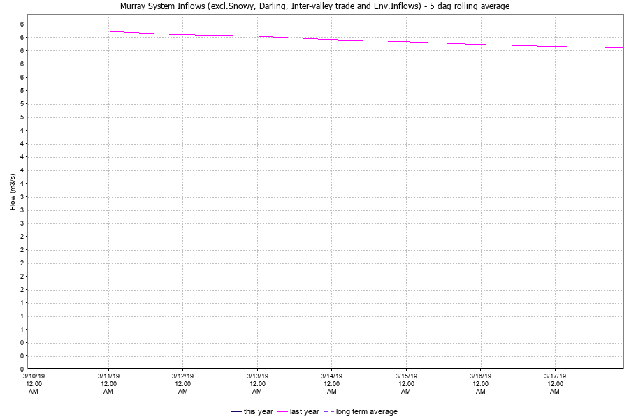
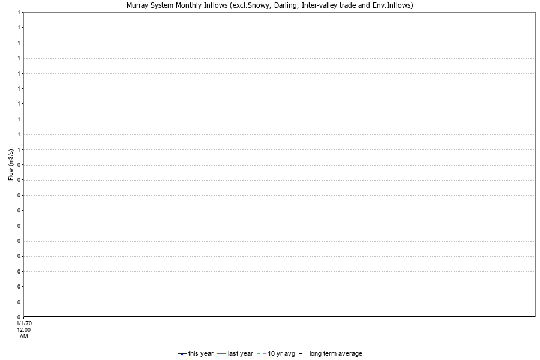

Water in Storage Week ending Wednesday 2019-01-30
| MDBA Storages | Full supply level (m AHD) | Full supply volume (ML) | Current storage level (m AHD) | Current storage volume (GL) | Current storage volume (%) | Dead storage (ML) | Active storage (GL) | Change in total storage for the week (GL) |
|---|---|---|---|---|---|---|---|---|
| 401027 - HUME DAM | 192.00 | 3005200 | 22900 | |||||
| 401224A - Dartmouth Dam | 486.00 | 3856230 | 71180 | |||||
| A4261093 - Lake Victoria (Lake Centre) | 27.00 | 677000 | 100000 | |||||
| MDBATOTAL - MDBA Storage Total (virtual) | ? | ? | ? | |||||
| MENINDE - Menindee Lakes | ? | 1731000 | 36000 | |||||
| ZROWS - Dummy Site | ? | ? | ? |
| Major Stage Storages | Full supply level (m AHD) | Full supply volume (ML) | Current storage level (m AHD) | Current storage volume (GL) | Current storage volume (%) | Dead storage (ML) | Active storage (GL) | Change in total storage for the week (GL) |
|---|---|---|---|---|---|---|---|---|
| 405258A - LAKE EILDON (HG) | 288.90 | 3334000 | 84000 | |||||
| 410102 - Blowering Dam | ? | 1631000 | 24000 | |||||
| 410131 - Burrinjuck Dam | ? | 1028000 | 3300 |
Menindee surcharge capacity is 2050 GL.
NSW takes control of Menindee Lakes when storage falls below 480 GL, and control reverts to MDBA when storage next reaches 640 GL.
Snowy Mountains Scheme Snowy diversions for week ending 2019-01-22
|
|
Major Diversions from Murray and Lower Darling (GL) *
|
|
* Figures derived from estimates and monthly data. Please note that not all data may have been available at the time of creating this report.
|
Flow to South Australia (GL) * Flow to SA will be greater than normal entitlement for this month due to the delivery of unregulated flows. |
|
Salinity (EC) (µSiemens/cm at 25° C)
| Current | Average over the last week | Average since August 1 | |
|---|---|---|---|
| 409013 - WAKOOL @ STONEY XING | 0 | ||
| 409204C - Swan Hill | 0 | ||
| 414200A - MURRAY BELOW WAKOOL | 0 | ||
| 414207A - MURRAY @ COLIGNAN | 0 | ||
| 414210A - MILDURA (LOCK 11 U/S) | 0 | ||
| 425007 - Burtundy | 0 | ||
| 425010 - Wentworth D/S (Lock 10) | 0 |
River Levels and Flows Week ending Wednesday 2019-01-30
| River Murray | Minor Flood Stage (m) | Gauge height local (m) | Gauge height AHD (m) | Flow (GL/day) | Trend | Average flow this week (GL/day) | Average flow last week (GL/day) |
|---|---|---|---|---|---|---|---|
| 401201A - Jingellic | 4.0 | ||||||
| 401204A - Tallandoon | 4.2 | ||||||
| 409001 - Albury | ? | ||||||
| 409002 - Corowa | ? | ||||||
| 409016 - Heywoods | 5.5 | ||||||
| 409017 - Doctor's Point | ? | ||||||
| 409025 - D/S Yarrawonga Weir | ? | ||||||
| 409202A - Tocumwal | ? | ||||||
| 409207B - Murray d/s Torrumbarry | ? | ||||||
| 414200A - MURRAY BELOW WAKOOL | ? | ||||||
| 414216A - Chafey's | ? | ||||||
| 425010 - Wentworth D/S (Lock 10) | ? | ||||||
| 426200A - MURRAY - RUFUS RIVER | ? | ||||||
| A4260903 - R Murray ds Lock 1 | ? | ||||||
| KHANCOB - Khancoban releases | ? |
| Tributaries | Minor Flood Stage (m) | Gauge height local (m) | Gauge height AHD (m) | Flow (GL/day) | Trend | Average flow this week (GL/day) | Average flow last week (GL/day) |
|---|---|---|---|---|---|---|---|
| 402205A - Bandiana | 2.7 | ||||||
| 403242C - Wangaratta (Combined) | ? | ||||||
| 405232C - GOULBURN @ McCOY | ? | ||||||
| 409013 - WAKOOL @ STONEY XING | ? | ||||||
| 409023 - EDWARD R D/S STEVEN | ? | ||||||
| 409035 - EDWARD R @ LIEWAH | ? | ||||||
| 410130 - Balranald Weir D/S | ? | ||||||
| 416001 - Mungindi | ? | ||||||
| 425003 - Bourke | ? |
| Minor Flood Stage (m) | Gauge height local (m) | Gauge height AHD (m) | Flow (GL/day) | Trend | Average flow this week (GL/day) | Average flow last week (GL/day) | |
|---|---|---|---|---|---|---|---|
| 401027 - HUME DAM | ? |
(i.e. Pre Dartmouth & Snowy Mountains scheme)
Weirs and Locks Pool levels above or below Full Supply Level (FSL)
| Murray | Full supply level (m AHD) | u/s | d/s |
|---|---|---|---|
| 409216A - YARRAWONGA WEIR (HG) | 124.90 | ||
| 409219 - TORRUMBARRY WEIR(HG) | 86.05 | ||
| 414210A - MILDURA (LOCK 11 U/S) | 34.40 | ||
| 425055 - Wentworth U/S (Lock 10) | 30.80 | ||
| A4260501 - R Murray us Lock 9 | 27.40 | ||
| A4260506 - R Murray us Lock 8 | 24.60 |
Lower Lakes FSL = 0.75 m AHD
| Lake Alexandria average level for the past 5 days (m AHD) |
|---|
Barrages Fishways at Barrages
| Openings | Level (m AHD) | No. open | Rock ramp | Vertical slot | |
|---|---|---|---|---|---|
| A4260526 - U/S Mundoo Barrage | A4260526 - U/S Mundoo Barrage | ||||
| A4260527 - U/S Tauwitchere Bg | A4260527 - U/S Tauwitchere Bg | ||||
| A4260570 - U/S Boundary Ck Bg | A4260570 - U/S Boundary Ck Bg | ||||
| A4260571 - U/S Ewe Island Bg | A4260571 - U/S Ewe Island Bg | ||||
| A4261034 - U/S Goolwa Barrage | A4261034 - U/S Goolwa Barrage | ||||
| GOLWAB2 - Goolwa Vertical Slot No 2 | GOLWAB2 - Goolwa Vertical Slot No 2 | ||||
| HUNTRCK - Hunters Creek Fishway | HUNTRCK - Hunters Creek Fishway | ||||
| TAUWIT2 - Small Vertical Slot Fishway | TAUWIT2 - Small Vertical Slot Fishway |
AHD = Level relative to Australian Height Datum, i.e. height above sea level
Murray System Inflows (excl.Snowy, Darling, Inter-valley trade and Env.Inflows) - 5 day rolling average
Murray System Monthly Inflows (excl.Snowy, Darling, Inter-valley trade and Env.Inflows)
